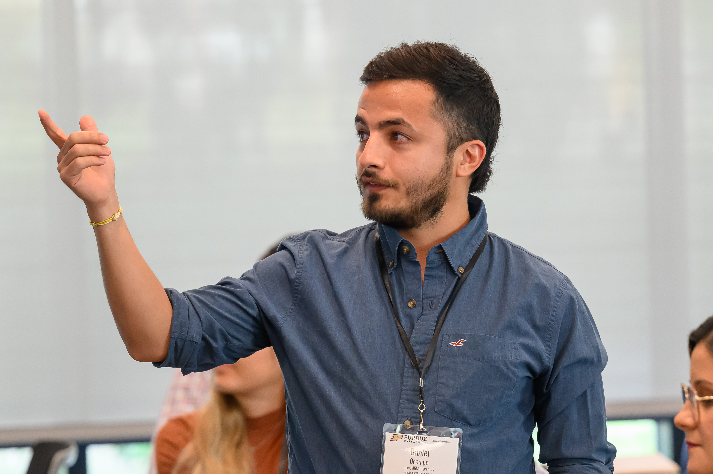

Hello!
PhD Mechanical Engineering · Texas A&M University · Spring 2026
My name is Daniel Ocampo and I am a Mechanical Engineer and recent PhD graduate from the J. Mike Walker '66 Department of Mechanical Engineering at Texas A&M University.
I worked in the Multiscale Mechanics of Materials Laboratory under the supervision of Prof. Wei Gao. My industry experience and doctoral research are twofold: a) development of computational codes to accelerate multiscale modeling using machine learning and probabilistic techniques (AtomDNN, Smart|DT, respectively); and b) modeling of mechanical, thermodynamical and structural properties of materials in diverse scales, including atomic systems at the nano, and dynamic structural response to shock and vibrations at the macro-scale.
Member of the Multiscale Mechanics of Materials Laboratory and the Center for Interface Science and Engineering from Texas A&M University. I'm also a Trailblazers in Engineering fellow from Purdue University.
I have been funded by the Federal Aviation Administration (FAA) and the National Science Foundation (NSF).
Research Experience
AtomDNN — ML framework for atomistic simulations
Open-source · containerized with Docker & Singularity · interfaced to LAMMPS
I am the author of AtomDNN, an open-source Python framework for training machine learning interatomic potentials (MLIPs) from density functional theory (DFT) data. The framework uses a modular architecture, automated testing, and reproducible workflows, and is directly interfaced to LAMMPS for large-scale molecular dynamics. It includes an adaptive loss-weighting algorithm to automatically balance competing objectives — energy, force, and stress prediction — in multi-component training.
View on GitHub →Structural dynamics surrogate pipeline — 30,000× speedup
★ 30,000× runtime acceleration — finite element hours → milliseconds
During my Ph.D. internship at SLB (Schlumberger), I designed and deployed a full-stack surrogate modeling pipeline for real-time structural health monitoring of drilling components. The pipeline integrates automated Abaqus data extraction, proper orthogonal decomposition (POD) for dimensionality reduction, Gaussian Process Regression as the surrogate layer, and linear state-space models for time-domain reconstruction — reducing FEA runtimes from hours to milliseconds.
Fracture mechanics in 2D high-entropy VTiCrMoC₃ MXenes
I discovered the first-reported ductility and toughening mechanisms in 2D high-entropy VTiCrMoC₃ MXenes by combining MLIP-driven fracture simulations with statistical analysis of atomistic trajectories. Machine learning interatomic potentials trained on DFT data enable physics-accurate molecular dynamics at scales inaccessible to ab initio methods — spanning atomic to mesoscale.
Reversible phase transitions in monolayer MoTe₂
Using ML-accelerated multiscale simulations, I identified the kinetic mechanism for reversible stress-induced phase transitions in monolayer MoTe₂, focusing on the vacancy-assisted mechanism enabling this reversibility. Supported by NSF grant 2308163 and published in Communications Materials (2026).
Read paper →Smart|DT — aircraft probabilistic damage tolerance software
I co-developed Smart|DT, an FAA-funded risk assessment software suite for aircraft probabilistic damage tolerance analysis at the Computational Reliability Laboratory (UTSA). I contributed to the Java-based GUI with modular architecture and automated testing, and accelerated probability-of-failure calculations from Monte Carlo methods to first and second order reliability methods (FORM/SORM). Smart|DT is interfaced to Afgrow, Nasgro, and Fastran codes.
Publications
-
[1]
Under preparationModeling fracture in 2D high entropy VTiCrMoC₃ MXenes using machine learning potentialsD. Ocampo, R. Namakian, C. Wu, F. Shuang, W. Gaonpj Computational Materials
-
[2]
Under preparationVacancy dependent mechanical behavior of high-entropy MXenesD. Ocampo, F. Shuang, R. Namakian, W. GaoInternational Journal of Mechanical Sciences
-
[3]
Published · 2026Kinetics of vacancy-assisted reversible phase transition in monolayer MoTe₂F. Shuang, D. Ocampo, R. Namakian, A. Ghasemi, P. Dey, W. GaoCommunications Materials, 2026https://doi.org/10.1038/s43246-026-01078-0
-
[4]
Published · 2024Adaptive Loss Weighting for Machine Learning Interatomic PotentialsD. Ocampo, D. D. Posso, R. Namakian, W. GaoComputational Materials Science, 2024https://doi.org/10.1016/j.commatsci.2024.113155
-
[5]
Published · 2018SmartPlot: Visualization Tool for Aircraft Probabilistic Damage Tolerance AnalysisD. Ocampo, H. R. MillwaterUTSA Undergraduate Research and Scholarly Works, 2018https://hdl.handle.net/20.500.12588/67
Experience
May 2025 – Mar 2026
- Accelerated structural dynamics FEA calculations by 30,000× using reduced-order models with POD, state-space models, and data-driven physics methods.
- Deployed computational models in sensors for real-time health monitoring of drilling components.
- Built a full-stack surrogate pipeline: automated Abaqus extraction, POD dimensionality reduction, GPR surrogate layer, and linear state-space reconstruction.
- Designed modular Python codebase following software engineering best practices with version-controlled repository and full-fidelity benchmarks.
Jan 2021 – Feb 2026
- Developed MLIPs trained on DFT data for physics-based, ML-accelerated molecular dynamics.
- Discovered first-reported ductility and toughening mechanisms in 2D high-entropy VTiCrMoC₃ MXenes (npj Computational Materials, under review).
- Identified kinetic mechanism for reversible phase transitions in monolayer MoTe₂ (Communications Materials, 2026, NSF grant 2308163).
- Authored AtomDNN: open-source containerized Python framework for MLIP training, interfaced to LAMMPS.
- Invented adaptive loss-weighting algorithm for MLIP training (Computational Materials Science, 2024).
Aug 2022 – May 2025
- Solid Mechanics for Mechanical Design — weekly lectures, recitations, and grading.
- Machine Learning for Mechanical Engineers — lecturing and individual student conferencing.
Jan 2019 – Jun 2020
- Co-developed Smart|DT, FAA-funded risk assessment software for aircraft probabilistic damage tolerance analysis.
- Contributed Java-based GUI and FORM/SORM acceleration of probability-of-failure calculations.
Jan 2016 – Dec 2016
- Developed code for bone-based material characterization via AFM nanoindentation.
- Built 3D finite element models for multiscale mechanical property extraction.
Awards & Honors
Contact & CV
I am actively seeking R&D positions in computational simulation, ML for science, and applied physics modeling, with availability starting Spring 2026. Open to national laboratories, AI for science companies, and energy industry R&D divisions anywhere in the US.
Feel free to reach out by email at daniel.ocampo18@gmail.com or by phone at (+1) 210-852-9061. You can also connect with me on LinkedIn, find my code on GitHub, view my publications on Google Scholar, and verify my ORCID at 0000-0003-0305-1359.
Download CV: daniel_ocampo_cv.pdf